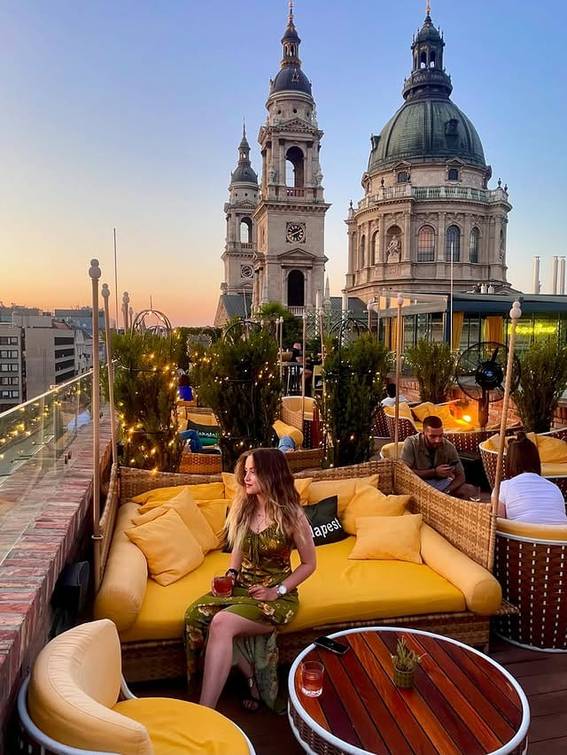
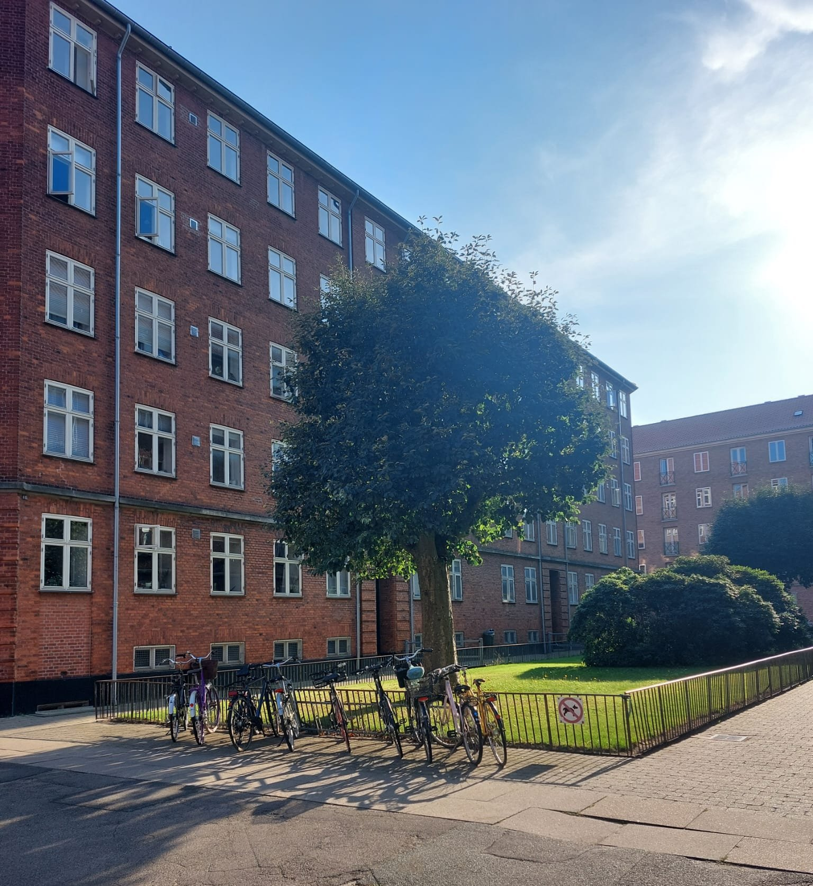
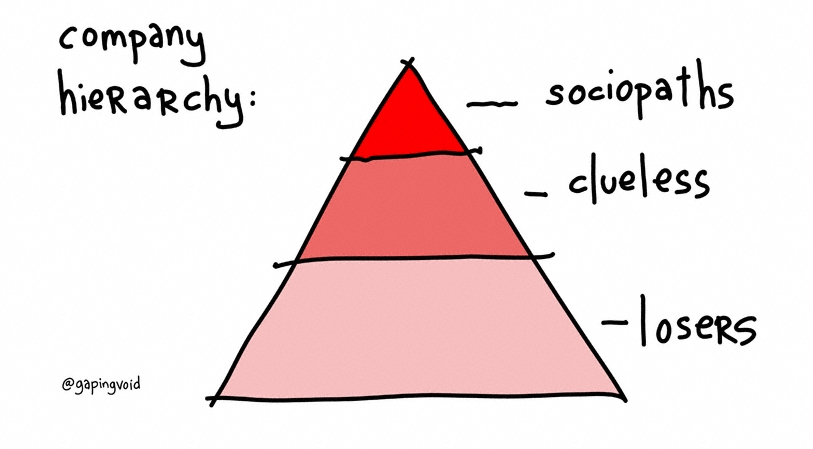
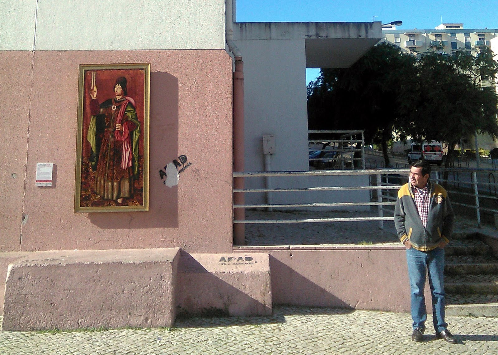
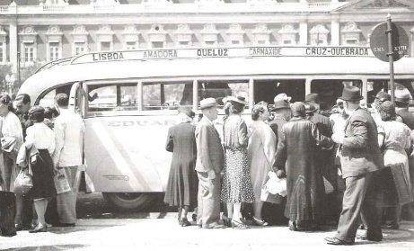
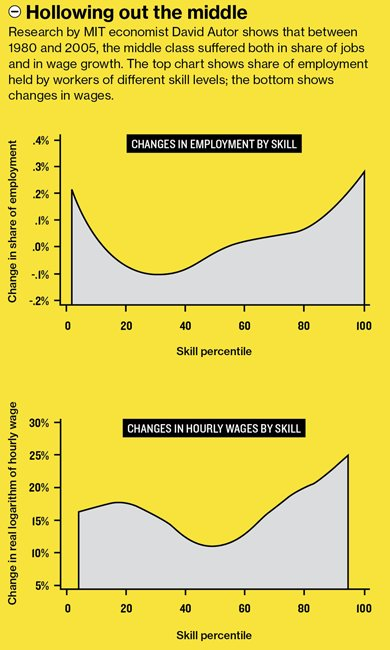
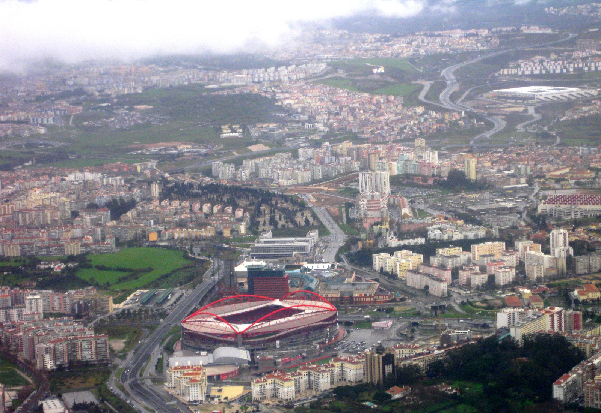

Notes From The Underground - VI
Beauty, in a person, prompts desire.

When our interest is entirely taken up by a thing, as it appears in our perception, and independently of any use to which it might be put, then do we begin to speak of its beauty.
On the other hand, beauty undoubtedly stimulates desire in the moment of arousal.
So is your desire directed at the beauty of the other? Is it a desire to do something with that beauty?
But what can you do with another person's beauty?
The satisfied lover is as little able to possess the beauty of his beloved as the one who hopelessly observes it from afar.
Much that is said about beauty and its importance in our lives ignores the minimal beauty of an unpretentious street, a nice pair of shoes or a tasteful piece of wrapping paper, as though these things belonged to a different order of value from a church by Bramante or a Shakespeare sonnet.
Yet these minimal beauties are far more important to our daily lives, and far more intricately involved in our own rational decisions, than the great works which (if we are lucky) occupy our leisure hours.
They are part of the context in which we live our lives, and our desire for harmony, fittingness and civility is both expressed and confirmed in them.
[Roger Scruton, Beauty (2009)]


The Sociopaths defeated the Organization Men and turned them into The Clueless not by reforming the organization, but by creating a meta-culture of Darwinism in the economy: one based on job-hopping, mergers, acquisitions, layoffs, cataclysmic reorganizations, outsourcing, unforgiving start-up ecosystems, and brutal corporate raiding.
In this terrifying meta-world of the Titans, the Organization Man became the Clueless Man. MacLeod's Loser layer represent the losers in the economic sense: those who have, for various reasons, made (or been forced to make) a bad economic bargain.
They've given up some potential for long-term economic liberty (as capitalists) for short-term economic stability.
Traded freedom for a paycheck in short. They actually produce, but are not compensated in proportion to the value they create (since their compensation is set by Sociopaths operating under conditions of serious moral hazard).
They mortgage their lives away, and hope to die before their money runs out.
Losers have two ways out: turning Sociopath or turning into bare-minimum performers.
Based on the MacLeod lifecycle, we can also separate the three layers based on the timing of their entry and exit into organizations.
The Sociopaths enter and exit organizations at will, at any stage, and do whatever it takes to come out on top.
The contribute creativity in early stages of a organization's life, neurotic leadership in the middle stages, and cold-bloodedness in the later stages, where they drive decisions like mergers, acquisitions and layoffs that others are too scared or too compassionate to drive.
They are also the ones capable of equally impersonally exploiting a young idea for growth in the beginning, killing one good idea to concentrate resources on another at maturity, and milking an end-of-life idea through harvest-and-exit market strategies.
The Losers like to feel good about their lives.
They are the happiness seekers, rather than will-to-power players, and enter and exit reactively, in response to the meta-Darwinian trends in the economy.
But they have no more loyalty to the firm than the Sociopaths.
They do have a loyalty to individual people, and a commitment to finding fulfillment through work when they can, and coasting when they cannot.
The Clueless are the ones who lack the competence to circulate freely through the economy (unlike Sociopaths and Losers), and build up a perverse sense of loyalty to the firm, even when events make it abundantly clear that the firm is not loyal to them.
To sustain themselves, they must be capable of fashioning elaborate delusions based on idealized notions of the firm.
Unless squeezed out by forces they cannot resist, they hang on as long as possible, long after both Sociopaths and Losers have left.
Venkatesh Rao (2009)
Em dois meses, desapareceram 14 dos 31 quadros da exposição "Coming Out", que o Museu Nacional de Arte Antiga espalhou pela Baixa de Lisboa.
O "Retrato do Conde de Farrobo", o "São Damião", o "Retrato do Senhor de Noirmont" e "Conversação" estão entre as réplicas furtadas, mas estas quatro continuam à vista de todos.
Só que agora é preciso atravessar o rio Tejo para vê-las.
"Não é um roubo, é um deslocamento", diz ao Observador um dos autores do desvio.
O quadro mais difícil de furtar não foi o primeiro, o "São Damião" de Bartolomé Bermejo, na Travessa dos Teatros.
"São Damião" tem 1,65 metros de altura.
Os dois rapazes esperaram pelas quatro da manhã e levaram um escadote, porque não chegavam aos parafusos superiores.
"Foi à justa que coube no carro", conta.
O objetivo do furto estava traçado desde o início: colocá-lo perto de casa, num bairro entre o Laranjeiro (Almada) e Miratejo (Seixal).
"Gostámos muito da atividade do museu e achámos que devia ser alargado a outros sítios".
Quem também parece ter gostado foram os moradores do bairro situado junto da Avenida Professor Rui Luís Gomes, que no dia 27 de novembro começaram a reparar na novidade.
"Ninguém tentou levar nem vandalizar, está intacto. Há pessoas que disseram que era o quadro mais bonito que já tinham visto", conta o autor da mudança, que considera que, ali, a pintura "ganha outra magnitude".
Desde que o MNAA começou a exposição já desapareceram 14 réplicas. Pela mão do 'Robin das Artes', não deverá desaparecer mais nenhuma.
"Já passámos a ideia. Até porque já não temos como tirar os outros [risos]".
Como último desejo, gostava que os quatro quadros "levassem gente de fora ao bairro" para os ver, tal como acontece no Chiado.
Observador (2015)

Com o tempo, e ajuda de visionários, irá se perceber que Lisboa não é uma cidade, é uma metrópole.

2013 – Joaquim Santos sublinhou ainda que "precisamos de uma região administrativa eleita, que comande o gestor operacional dos transportes.
Estes gestores operacionais têm que estar subordinados a uma visão política.
E a visão política que falta é a visão regional.
Podia já começar-se pela AML, elegendo pessoas para coordenarem esta área dos transportes."
Transportes em Revista (2013)
2013 – Desenvolvido pelo professor José Manuel Viegas, o sistema tarifário baseado em favos estava assente numa lógica zonal como base tarifária, zonamento esse que subdividia o território em polígonos regulares tornando possível a construção do tarifário a partir de qualquer localidade.
Ou seja, o cliente poderia escolher onde queria circular e pagava apenas o que tinha escolhido. A Área Metropolitana de Lisboa passava a estar dividida em 68 zonas, estando à disposição dos clientes selecionar aquelas que melhor se adaptavam às suas necessidades de mobilidade.
Para José Manuel Viegas, este sistema «é mais simples e mais justo para os clientes, porque o tarifário passa a estar centrado neles».
Transportes em Revista (2013)
2014 – Germano Martins, presidente da Autoridade Metropolitana de Transportes de Lisboa, lembrou que "a Carris e o Metro não são de Lisboa, são da região", sublinhando que é preciso ter isso em conta quando se discute a possibilidade de o município de Lisboa liderado por António Costa assumir a gestão destas empresas.
Publico (2014)
2016 – Bernardino Soares, o presidente da Câmara de Loures rejeita a entrega da Carris e do Metropolitano à câmara de Lisboa, pois tem receio de que tal se traduza num acentuar da tendência para essas empresas não darem resposta fora de Lisboa, sendo que os seus utentes ultrapassam largamente a população do concelho de Lisboa.
Para o autarca, a decisão acertada é confiar a sua gestão a uma entidade supramunicipal em que os municípios participem.
Publico (2016)
The problem with being average.

[Profit] Make Profit By Stealing Underpants - South Park
Europeans and Westerners were not prepared for a world increasingly influenced by ideas and ideologies that originated in traditionalist non-Western cultures. Supposedly such cultures would already be modern and secular like the West, if the prophecy of the universal progress of humanity had been fully fulfilled. The European mental framework has already been overcome by reality, but its intellectual persistence is a huge obstacle to understanding the trends that are emerging in the contemporary world. Nowadays it is easy to see that the democratic and pluralist legal-constitutional edifice that was created in Europe was not thinking, nor was it prepared, to face a cultural-social and religious-political contest arising from non-Western ideas and ideologies. The Islamic attacks in recent weeks in France, which targeted both the teacher of a secular republican school (on the outskirts of Paris), and the sacristan and the faithful of a church (in Nice), leave no doubt about the frontal collision route between Islam and the French Republic. The terrain is particularly favorable to Islamists. On the one hand, they exploit the poor knowledge of what is not European and Western, as well as the guilt complexes in Europe due to the recent colonial past, whose wounds have not yet ended. On the other hand, they take advantage of the enormous demographic dynamism and youth of the people from the southern Mediterranean and other parts of the Islamic world. We do not know whether current generations of Europeans, out of indifference, neglect or misperception, will be willing to wage the long cultural, social and political struggles necessary to preserve what has been achieved at the cost of enormous sacrifices and loss of life in the past. José Pedro Teixeira Fernandes (2020) Egyptian President Gamal Adbel Nasser (1966)
Dominant urban theory marginalizes anywhere outside imagined city boundaries as the sub to the urb.
These are not apolitical research cartographies; they are exercises of power, taking care to highlight some elements and leave others out, constructing and ordering what counts.
[Matt Hern (2024)]

Nenhum homem é uma ilha isolada; cada homem é uma partícula do continente, uma parte da terra; se um torrão é arrastado para o mar, a Europa fica diminuída, como se fosse um promontório, como se fosse a casa dos teus amigos ou a tua própria; a morte de qualquer homem diminui-me, porque sou parte do género humano.
E por isso não perguntes por quem os sinos dobram; eles dobram por ti.
[John Donne (1624)]
Foi agredido o motorista de autocarro, homem branco, que chamou a PSP para denunciar a passageira Cláudia Simões, mulher negra, que viajava sem bilhete e que alega depois ter sido depois agredida por polícias.
As agressões ao motorista ocorreram na noite de 24 de Janeiro de 2020, em Massamá, concelho de Sintra, Área Metropolitana de Lisboa, Portugal.